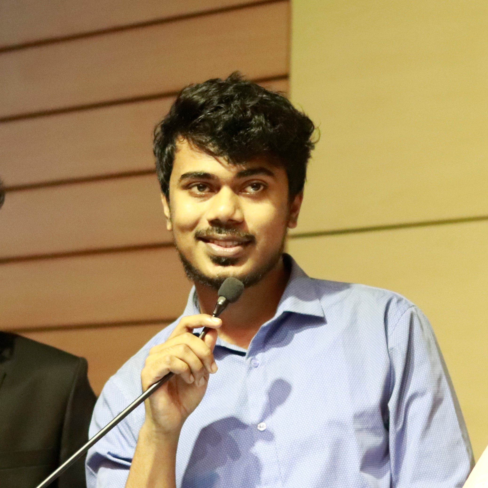

The Telephone Game: Evaluating Semantic Drift in Unified Models
Sabbir Mollah, Rohit Gupta, Sirnam Swetha, Qingyang Liu, Ahnaf Munir, and Mubarak Shah

Profile
I am a PhD student in Computer Science at the University of Central Florida and a Graduate Research Assistant at the Institute of Artificial Intelligence. My research focuses on multimodal unified models, memory mechanisms, and multi-agent systems. I also have experience in NLP, document understanding, and production machine learning systems.
Research
Sabbir Mollah, Rohit Gupta, Sirnam Swetha, Qingyang Liu, Ahnaf Munir, and Mubarak Shah
Kevin Zhai, Sabbir Mollah (Co-First Author), Zhenyi Wang, and Mubarak Shah
Sabbir Mollah, Rakib Mohammed, Mashrur Wasek, AKM Shahariar Azad Rabby, Fuad Rahman, and Nabeel Mohammed
Md. Ismail Hossain, Mohammed Rakib, Sabbir Mollah, Fuad Rahman, and Nabeel Mohammed
Background
PhD in Computer Science
2024–Present
Orlando, Florida, USA
B.S. in Computer Science and Engineering
2017–2021
Dhaka, Bangladesh
Industry & Research
Machine Learning Engineer
Dec 2022–Jul 2024
Dhaka, Bangladesh
Software Engineer, Machine Learning
Sep–Dec 2022
Dhaka, Bangladesh
Research Assistant
Sep 2021–Aug 2022
Dhaka, Bangladesh
Lab Instructor, ECE Department
Spring & Summer 2022
Dhaka, Bangladesh
Taught undergraduate Database Management Systems with SQL and Object-Oriented Programming with Java.
Toolkit
PyTorch, TensorFlow, Hugging Face, scikit-learn, pandas, Polars, PySpark, matplotlib
Python, Julia, Java, C, C++, C#, Haskell
Flask, FastAPI, Spring Boot Reactive, .NET Framework
MySQL, DynamoDB, MongoDB, Neo4j
Git, GitHub, GitLab
Bangla, English, Italian
Recognition
2022
Finalist; applied cost-sensitive learning to improve model performance.
2021
Champion; designed and deployed a handwriting recognition model.
2019
First runner-up; presented a Firebase-connected fire detection system.
2018
Second runner-up in a hardware and software problem-solving competition.
Community
2017–2021
Chair of a 300+ member community; organized HackNSU Season 2.
2017–2019
Sub Executive; led digital promotion activities.
2020–2022
Led four workshops on Python, PyTorch, and deep learning.
2014–2016
Founding General Secretary of the secondary-school science club.